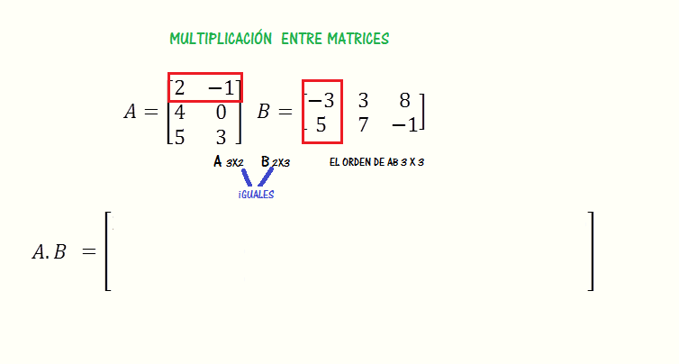

Tabla de contenidos
- 1. Introducción
- 2. Matrices especiales
- 3. Operaciones con matrices
- 4. Diferentes formas de representar un sistema de ecuaciones lineales
- 5. Propiedades de las operaciones con matrices
- 6. Guía de actividades y texto teórico
- 7. Inversa de una matriz
- 8. Material teórico y actividades sobre inversa
- 9. Autoevaluación
- 10. Archivos Completos
1. Introducción
En este libro estaremos trabajando con matrices. Como siempre, les recomendamos que distribuyan bien el tiempo y que realicen las actividades propuestas antes de los encuentros presenciales para que puedan aprovecharlos mejor
Las matrices y los determinantes son herramientas del Álgebra que facilitan el ordenamiento de datos y su tratamiento.
Nosotros ya tuvimos un primer encuentro con las matrices al momento de reescribir un sistema de ecuaciones para trabajar con el método de resolución de Gauss. Por ejemplo, en el apartado 6. ¿Cómo hallar el conjunto solución de un sistema de ecuaciones lineales? del libro anterior, hay un Video con un ejemplo de resolución mediante el método de eliminación de Gauss en el que se presenta una resolución del sistema:
\[ \begin{cases} x-y+3z = 1 \\ 2x+y-2z = 1 \\ -3x+y-z = -1 \end{cases} \]
Para ello, el profesor del video escribe la matriz ampliada asociada al sistema:
\[ \left( \begin{array}{ccc|c} 1 & -1 & 3 & 1 \\ 2 & 1 & -1 & 1 \\ -3 & 1 & -1 & -1 \end{array} \right) \]
Durante esta semana presentaremos algunas matrices especiales, definiremos la suma de matrices, la multiplicación de un número por una matriz y la multiplicación de matrices.
Al realizar los ejercicios y problemas que les proponemos surgirán algunas cuestiones particulares que se dan con estos objetos y las operaciones entre ellos. Recuerden que tienen el foro Consultas
En el siguiente video se explica qué es una matriz, qué es la dimensión y cómo se identifican sus elementos. Recuerden que siempre que podamos vamos a estar ofreciendo el mismo video en dos plataformas diferentes por si alguna se cae.
2. Matrices especiales

En el siguiente video se muestran distintos tipos de matrices especiales: matriz fila, matriz columna, matriz nula, matriz cuadrada.
En el siguiente video se muestran distintos tipos de matrices cuadradas especiales y algunos de sus elementos: diagonal principal, traza, matriz triangular superior, matriz triangular inferior, matriz diagonal, matriz identidad, matriz escalar.
En el siguiente video presentamos a la matriz traspuesta:
3. Operaciones con matrices
En el siguiente video se explica la suma de matrices.
En el siguiente video se explica la resta de matrices.

En el siguiente video se explica cómo multiplicar una matriz por un escalar.
En los siguientes videos se explica el producto de matrices.
4. Diferentes formas de representar un sistema de ecuaciones lineales
Dado un sistema de ecuaciones lineales podemos representarlo con matrices. En el siguiente video, el profesor Gastón nos cuenta cómo pensarlo:
Les proponemos que piensen el problema 20 de la página 58 de la Guía de problemas. Luego, pueden ver el siguiente video en el que el profesor Martín Ch nos muestra parte de la resolución del primer ítem.
5. Propiedades de las operaciones con matrices
¿Qué propiedades cumple la suma y la resta de matrices? ¿Y el producto de un escalar por el de una matriz?.
En el siguiente video, el profesor Daniel, nos cuenta qué sucede con la (no) conmutatividad de la multiplicación de matrices:
¿Se cumple la propiedad distributiva de la multiplicación de matrices con respecto a la suma?
En el siguiente recorte del libro Howard, A. (1994). Introducción al Álgebra Lineal se presentan algunas propiedades:
6. Guía de actividades y texto teórico
A continuación, pueden realizar los ejercicios de la Guía de actividades sobre operaciones con matrices.
Si lo desean, pueden consultar teoría sobre este tema en Altman, Comparatore y Kurzrok (2001). Matemática 7: matrices. Pág 11 a 78.
Tengan en cuenta que pesa poco menos que 34 MB y que puede tardar un poco en bajar.
7. Inversa de una matriz
El conjunto de los números reales junto con la suma y la multiplicación y los neutros de cada operación tiene una estructura muy particular, conforman lo que se llama cuerpo. Por ejemplo, sabemos que el \( 0 \) es el neutro de la suma, es decir, cualquier número real sumado a \( 0 \) da el mismo número real del principio. Sabemos que para cada número real \( a \) existe un número que sumado al primero me da el \( 0 \), ese número recibe el nombre de opuesto del número \( a \) y lo notamos \( -a \). Es decir, que \( a+(-a) = 0 \). La multiplicación tiene a \( 1 \) como neutro: \( a \cdot 1 = a \). La multiplicación cumple con la propiedad conmutativa (al igual que la suma), es decir, para cualesquiera dos números reales \( a \) y \( b \) vale que \( a \cdot b = b \cdot a\).
¿Qué sucede con las matrices? Bueno, en principio tanto para sumar matrices como para multiplicarlas, el tamaño debe ser el que corresponda en cada caso. ¿Cómo deben ser dos matrices para que puedan sumarse? ¿Cuál es el tamaño que deben tener dos matrices para que puedan multiplicarse? En el Texto con las propiedades de las operaciones con matrices del libro Howard, A. (1994). Introducción al Álgebra Lineal tienen un resumen de propiedades de las operaciones entre matrices, y de un escalar por una matriz.

Una cuestión que planteamos en los apartados anteriores es si ocurre o no que la multiplicación de matrices no cumple con la propiedad conmutativa (pueden revisar el Video sobre la no conmutatividad de la multiplicación de matrices). Bueno, en general no se cumple, hay algunos ejemplos en los que sí, pero no en todos los casos.
Otra cuestión tiene que ver con la idea relacionada con procesos reversibles. Por ejemplo, pensemos esto primero en el conjunto de los números reales. Si tenemos la multiplicación \( a \cdot b\) eso da un número real \( c \), en algunos casos es posible, teniendo \( c \) y \( b \) volver a obtener \( a \). Lo hacemos dividiendo \( c \) por \( b \). Pero si no quisiéramos acudir a una operación distinta, si quisiéramos quedarnos con la multiplicación, también podemos “desandar” el camino si a \( c \) lo multiplicamos por el inverso de \( b \), es decir si hacemos la cuenta \( c \cdot \frac{1}{b} \). Recordemos \( 0 \) no tiene inverso, pero el resto de los números reales sí.
En particular, si tenemos una ecuación en el conjunto de los números reales \( a \cdot x = b \) y \( a \) es distinto de \( 0 \), podemos multiplicar ambos miembros por el inverso multiplicativo de \( a \) y logramos despejar la incógnita \( x \). De esta manera queda \(x = \frac{b}{a}\).
¿Qué sucederá en el caso de que tengamos una ecuación con matrices?
\[ A \cdot x = b \]
En el siguiente video el profesor Martín Ch retoma algunas de las cuestiones que venimos mencionando en la introducción de este libro:
En el siguiente video el profesor Martín T calcula la matriz inversa de una matriz de usando el método de Gauss-Jordan.Aprovechamos también para pensar un significado de la matriz inversa al momento de hacer cuentas.
¿Todas las matrices son inversibles? En el siguiente video tratamos de encontrar una matriz inversa de una matriz de \( 3 \times 3 \) en una de ellas nos encontramos con un inconveniente, ¿qué significa? ¿lo podemos pensar geométricamente?.
8. Material teórico y actividades sobre inversa
Les proponemos que realicen las actividades del siguiente Listado de ejercicios y problemas sobre matriz inversa.
Si lo creen necesario pueden acudir a la sección de matriz inversa del libro de Maestripieri, Pavón y Resmesar (2017) Notas de Álgebra Lineal. Cap. 2. Pág 101 a 108.
Extra: Pajaritos, Teoría Producto Matricial, Matriz de Lefkotvitch, Ejercicios
Ejercicio extra: Pajaritos
9. Autoevaluación
Como parte de la evaluación continua les proponemos la Autoevaluación sobre matrices. Ingresen al cuestionario para ver la fecha de apertura y la de cierre. Esta autoevaluación involucra temas de este libro y del anterior.
El puntaje que se obtiene en la autoevaluación solo debe tomarse como un porcentaje de resolución correcta.
Los que para cuando sea el momento de realizar la autoevaluación hayan podido realizar las actividades de práctica, realizado las Consultas, leído los textos y vistos los videos.
Archivos Completos
- Unidad 3
- Propiedades de las operaciones con matrices.
- Guía de actividades sobre operaciones con matrices.
- Matemática 7: matrices. Pág 11 a 78.
- Listado de ejercicios y problemas sobre matriz inversa.
- Maestripieri, Pavón y Resmesar (2017) Notas de Álgebra Lineal. Cap. 2. Pág 101 a 108.
- Ejercicio extra: Pajaritos
- Ejercicios extra: Pajaritos, Matriz de Lefkovitch, Teoría